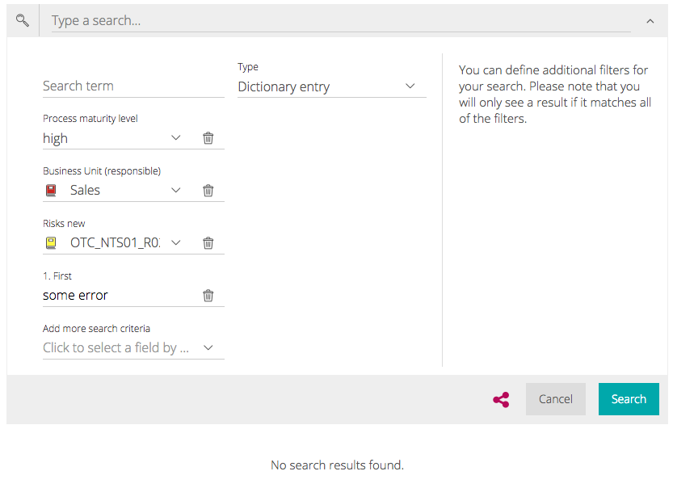
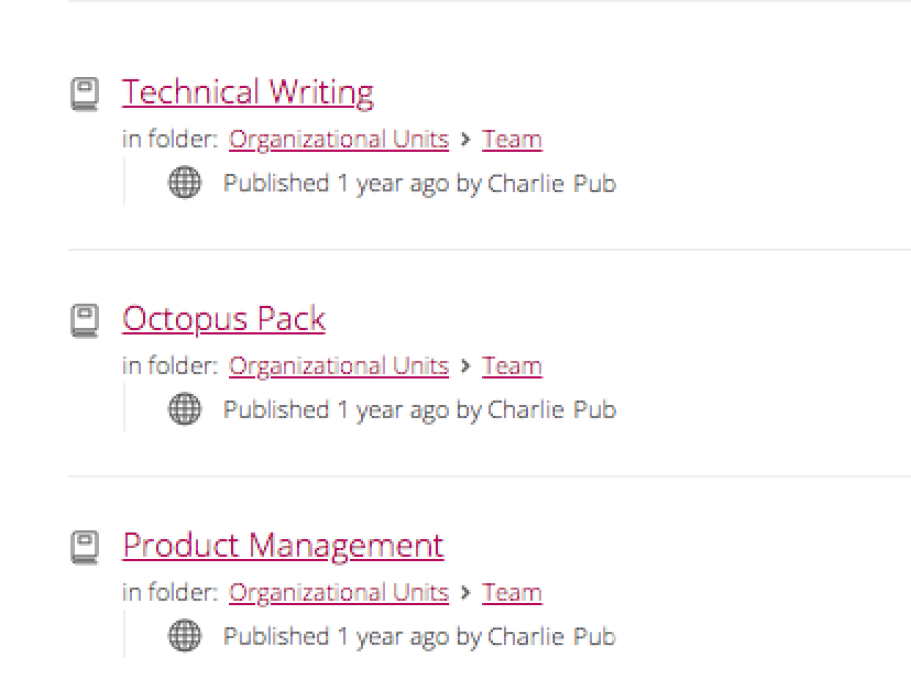
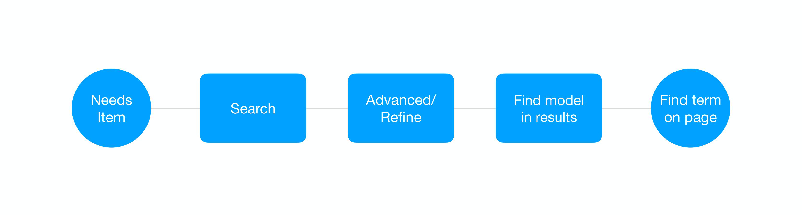
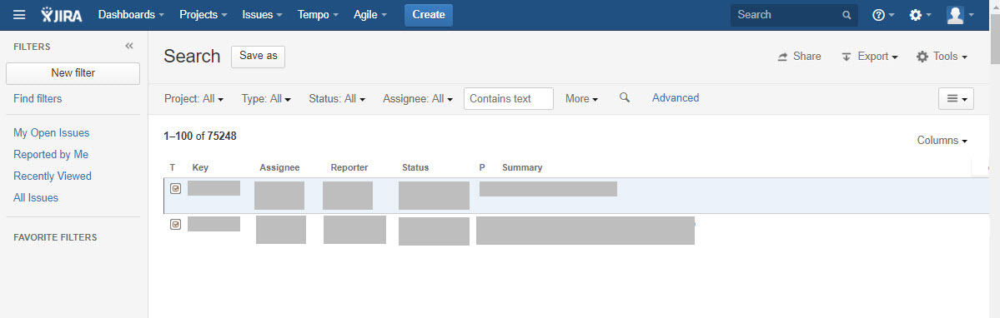
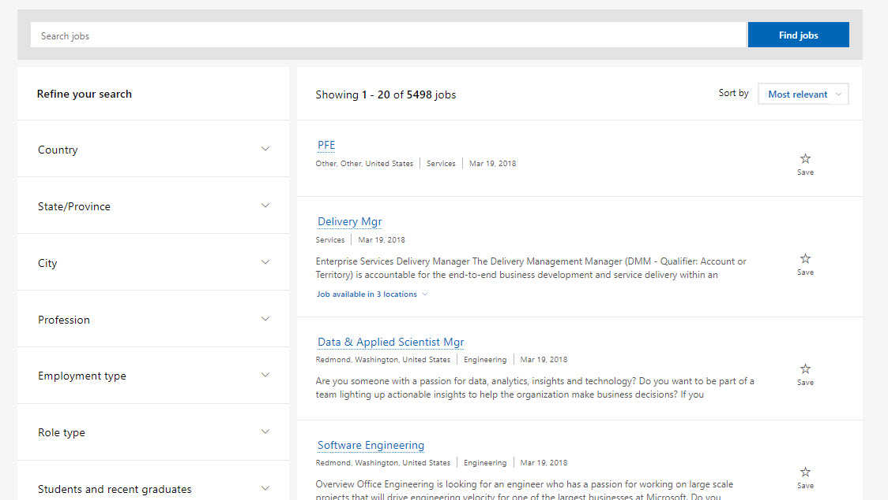
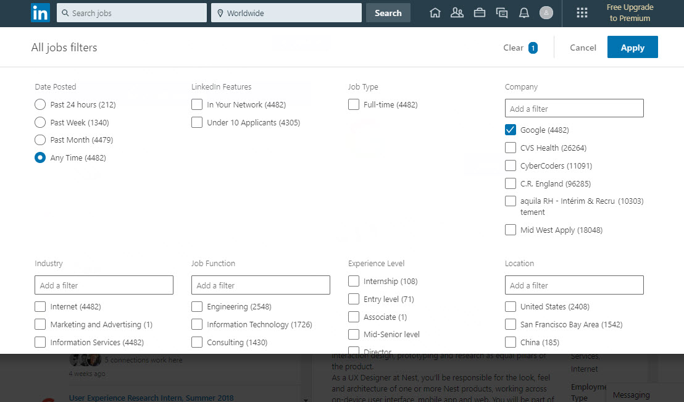
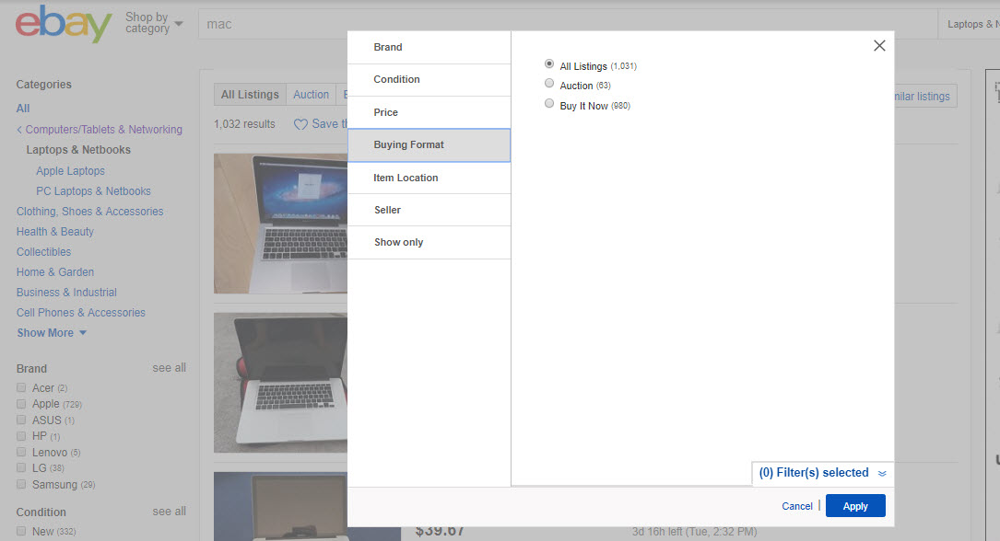
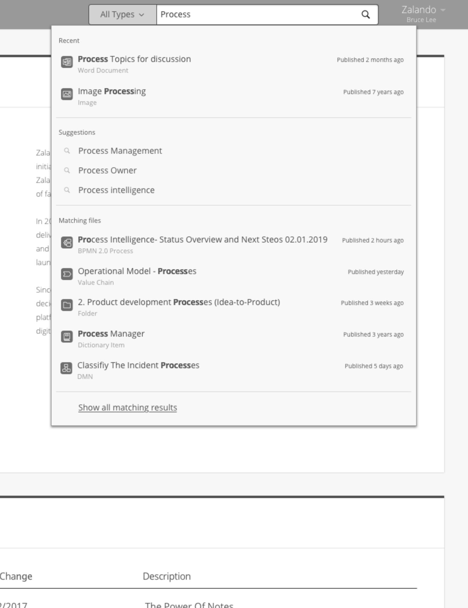
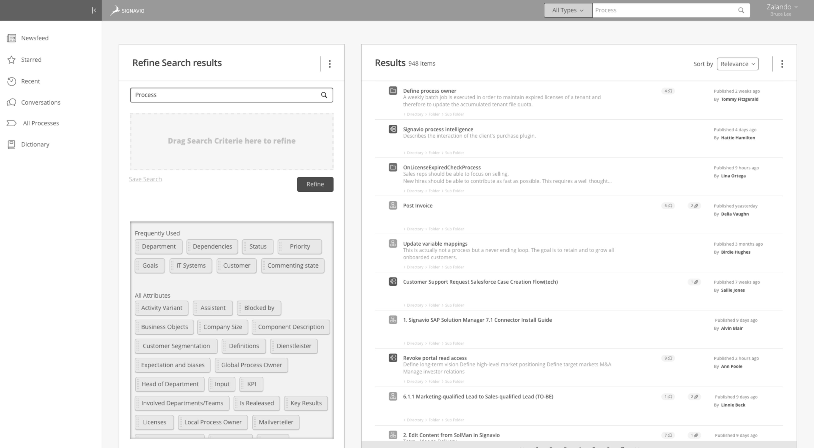
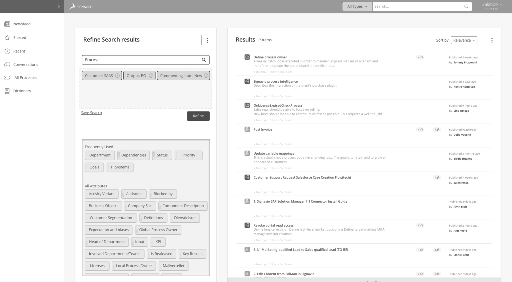

Signavio (now SAP Signavio) makes process management software used by over 1,500 companies and more than a million users worldwide. The Collaboration Hub is where employees find, view, and work with business process documentation: a company's single source of truth for how things get done. I joined as Senior UX Designer and quickly noticed that a critical piece of the product had been left behind as the platform grew.
The Hub's search was used heavily but hadn't evolved with the product. Simple search matched titles only. No autocomplete, no suggestions, no recent searches. Users expected Google; they got a blank text field.
The existing simple search: a blank field with title-only matching.
Advanced search was worse. A confusing form with hidden dropdowns, unclear labels, no error feedback, and filter lists running to over a thousand items for some customers. About 80% of users never touched it. They stuck with simple search and scrolled through unstructured results, hoping to spot what they needed.

The confusing advanced search form.

Unstructured results with no way to filter further.
Nobody asked me to look at search. I spotted the problem while ramping up on the product as a new team member. Fresh eyes helped: I was experiencing the same friction that real users faced every day.
Signavio had no analytics function, so I partnered with a backend engineer to pull raw usage data. The numbers confirmed the hunch: the vast majority used simple search, almost nobody used advanced filtering, and engagement dropped off a cliff after the first page of results.
A conversation with a Customer Success representative shaped my design direction. She told me that many Hub users aren't tech-savvy. They're process owners, compliance officers, HR leads. People who use web browsers and office tools. Not power users. That insight changed everything.
One customer hid pictures inside process folders, challenging employees to find them as a way to encourage product adoption. Creative, but also a sign that finding things in the Hub was genuinely hard.
I mapped the search journey into five stages: the need, the search, advanced filtering, finding the model in results, and spotting it on the page. Each had problems, but result refinement was the biggest gap. Advanced search was so broken most users skipped it entirely, leaving them stranded in long, unfiltered lists.

The search journey in five stages. Advanced filtering was the critical gap.
Knowing our users weren't power users, I wanted filtering that felt tangible. Something closer to sorting papers on a desk than writing database queries.
Laying out the criteria visually will simplify the interface. The current form is confusing, unpredictable, and hides information.
Preventing use of unfilled criteria will reduce errors. Users are currently making mistakes without knowing it.
I explored four established filtering patterns before committing to a direction: a two-column sidebar, JIRA-style toolbar dropdowns, a lightbox with faceted columns, and a megadrop panel.




For our user base, drag-and-drop won. Criteria appear as visible tags. Users drag what they need into a refinement area, pick a value, and results update. Every active filter is visible and removable. The rationale: recognition over recall, continuous visibility, and error prevention built into the interaction itself.
The redesign improved the full journey: an autocomplete dropdown at entry, and a drag-and-drop criteria system for refinement.

New search entry: recent items, suggestions, and matching files before hitting enter.

The refine panel: frequently used criteria at the top, all attributes below. Drag to filter.

Three active criteria. Results narrowed from 948 to 17 items.
I tested the prototype with Signavio employees. Even the engineers said it felt "too easy." For our actual users, that meant it would be just right.
The project was deprioritized before reaching development. That happens in enterprise product work: even well-researched proposals compete with shifting business priorities.
The work wasn't wasted. The research influenced how the team thought about search and discoverability. And for me, it reinforced a lesson I keep learning: great design needs a coalition around it. The data was clear, the solution tested well, but I hadn't built enough internal champions to protect it. Next time, I'd bring more people into the process earlier to create shared ownership of the problem.